Product Design Lead
schoolhouse.world & Khan World School
Product manager, engineer (x2), design manager
4 weeks
Schoolhouse.world is a non-profit ed-tech initiative started by Sal Khan to help provide free online education to anyone who wants to learn.
Khan World School (KWS) is an online school of 200+ students and teachers. KWS encourages a flipped classroom approach. Teachers deliver synchronous daily seminars but ultimately students engage in self-paced mastery of course material.
Both students and teachers at KWS use Schoolhouse.world for learning and teaching.
In a KWS flipped classroom, students take online tests on Schoolhouse.world to achieve certifications that demonstrate to their teacher that they have mastered course material.
Certifications are self-paced so students will become certified at different times. Therefore, teachers must track the certification progress of their students.
I was tasked to design the first version of a classroom tool for teachers at KWS to track the certification progress of students in their classes.
I was tasked to design the first version of a classroom tool for teachers at KWS to track the certification progress of students in their classes.
Most teachers teach more than one class or subject. To manage students between multiple classes, teachers can create multiple classrooms for their respective students to join.
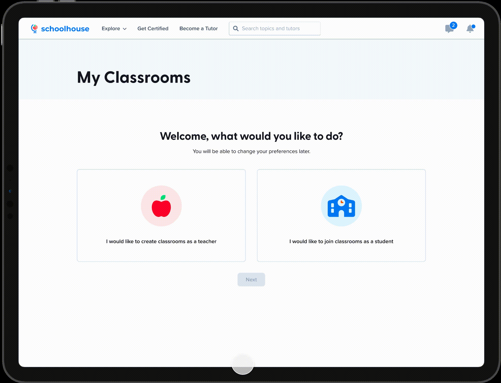
Teachers would like a high-level understanding of overall class progress. The table visibly displays certification progress for every student in the class.
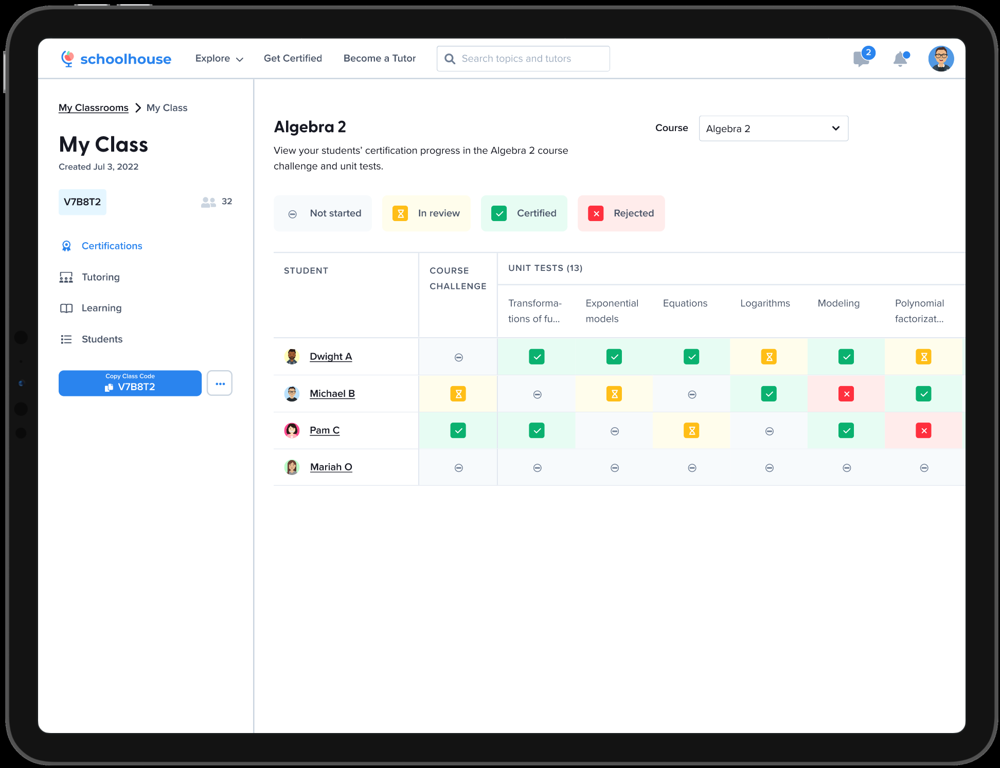
Sometimes, there are students that struggle more than others. To obtain more insight into the individual needs of their students, teachers can view individual details for each student.
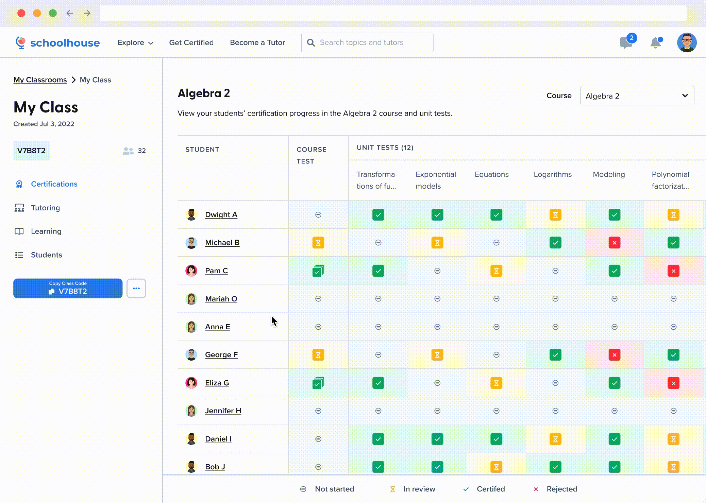
Teachers need to track certification progress so they know which students have mastered course material and which students are struggling.
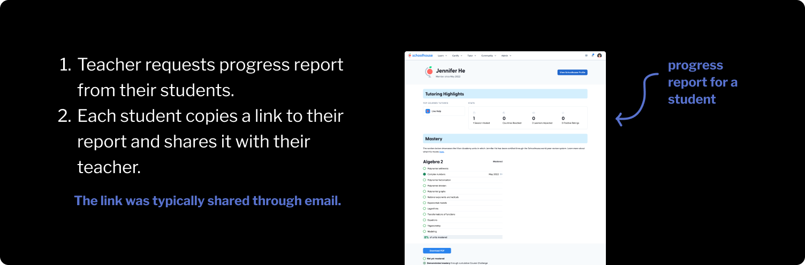
I joined this project after research and discovery. The project team already talked to teachers at Khan World School about their current experience, but I helped them define key insights.
Most of the time, teachers only required a high-level understanding of overall class progress. Currently, teachers received individual, detailed progress reports from every student across multiple classes, which meant they were reviewing more information than required to achieve high-level understanding.
Self-paced learning meant the timing of course progress updates varied every semester between students. Currently, there was no indication when students made progress, so teachers would need to constantly request new progress reports to ensure they were up to date on student progress.
Group student information into classrooms. Teachers should not have to review 20+ individual reports to have a general understanding of overall class progress.
Keep teachers continuously updated on class progress. Teachers should be able to review class progress at any time because the timing of course progress updates occurred randomly.
Most teachers taught more than one class. Teachers needed to track progress for each of their classes, so students needed to be grouped by class. Teachers could create multiple classrooms for their respective students to join.
Although the classroom tool was primarily used by teachers, it required students to join the classroom themselves. Therefore, there were two use cases: teachers who create classrooms and students who join classrooms.
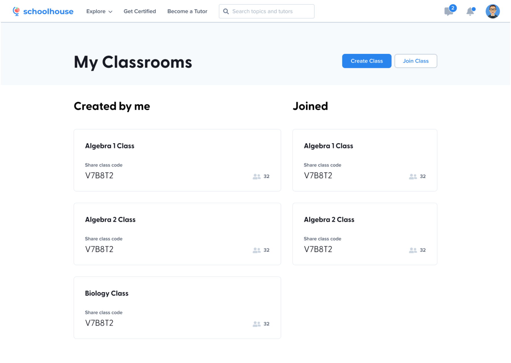
Hierarchy is established between two actions
All classrooms that are relevant to the user are visible
It is unlikely for teachers to join classrooms, resulting in an indefinite empty state
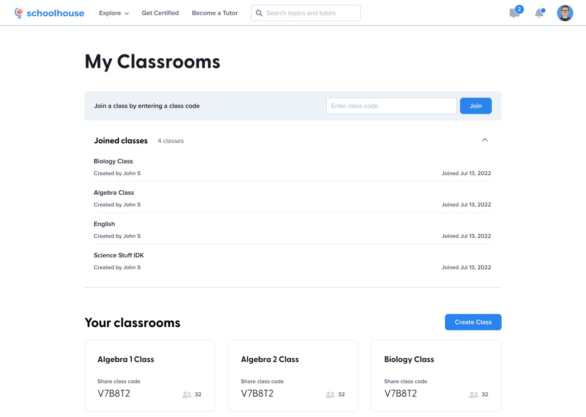
Required actions are made clear by input field
Accordion hides joined classes from teachers and creates additional screen space
Although hidden when collapsed, the accordion is an area of dead screen space that remains unused by teachers
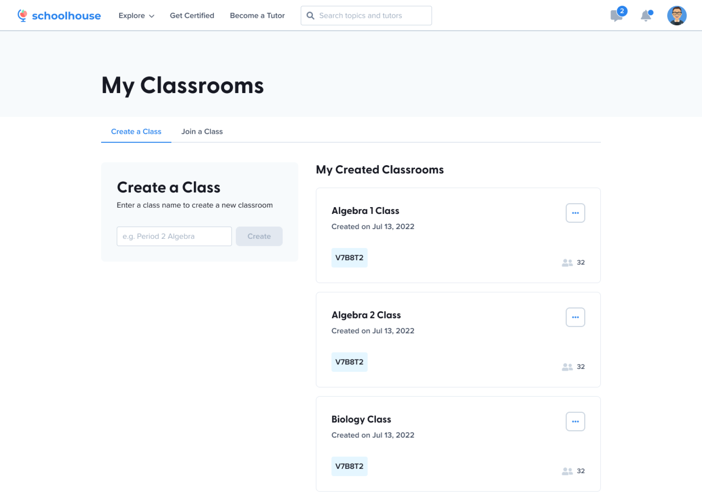
Use cases are differentiated
Tabs are labelled with clear call-to-action
Students who need to join a class must first navigate themselves to the correct tab
Option 3 was used because it was important for student/teacher use cases to be differentiated. ‘Joining a classroom’ should not be reduced to a secondary action because for students, this is their primary action.
The tradeoff of option 3 was that students needed to first navigate themselves to the correct tab. To mitigate this tradeoff, my design manager and I proposed a preliminary onboarding page that automatically directed each user to the correct tab. Because of short timelines and additional technical requirements, this was first tested with users to determine if it improved ease of use for both use cases.
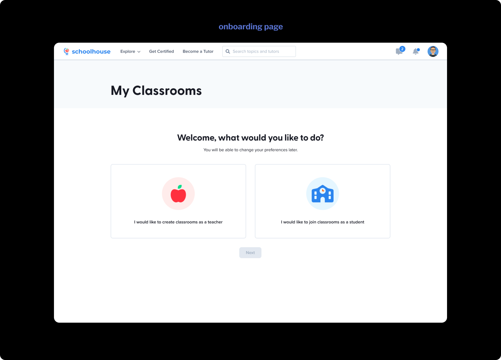
Four groups were created.
(1) Control group, teachers: Prototype with no onboarding page.
(2) Varied group, teachers: Prototype with onboarding page.
(3) Control group, students: Prototype with no onboarding page.
(4) Varied group, students: Prototype with onboarding page.
Teachers were asked to create a classroom. Students were asked to join a classroom.
Task completion rate (%).
On a scale of 1-5, how easy was this task?
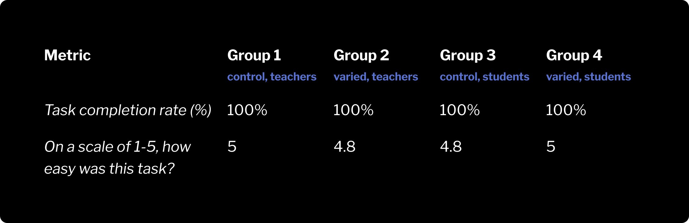
Despite similar ease of use between groups, it was observed that students with the control prototype had more difficulty finding the ‘Join a Class’ tab. 3 out of 5 participants in group 3 hovered over information irrelevant to their use case before directing themselves to the correct tab.
Ultimately, qualitative observations demonstrated there was reason to develop the onboarding page, it was just not prioritized for the MVP.
Teachers divided their courses into units. Students completed unit tests to demonstrate mastery in that unit and progress through the course. At any point, and for any student, a unit test could be: not attempted, certified, in review, or rejected.
Teachers needed to know at any point, and for any student, which unit tests were: not attempted, certified, in review, and rejected.
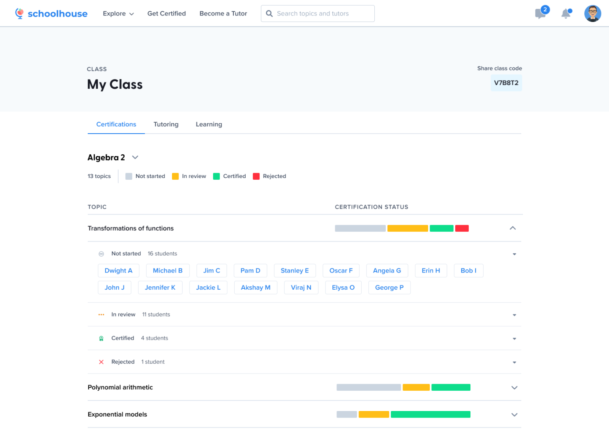
Familiar to Khan Academy users
No truncation of unit names
Accordions decrease accessibility to student information
Information is difficult to scan
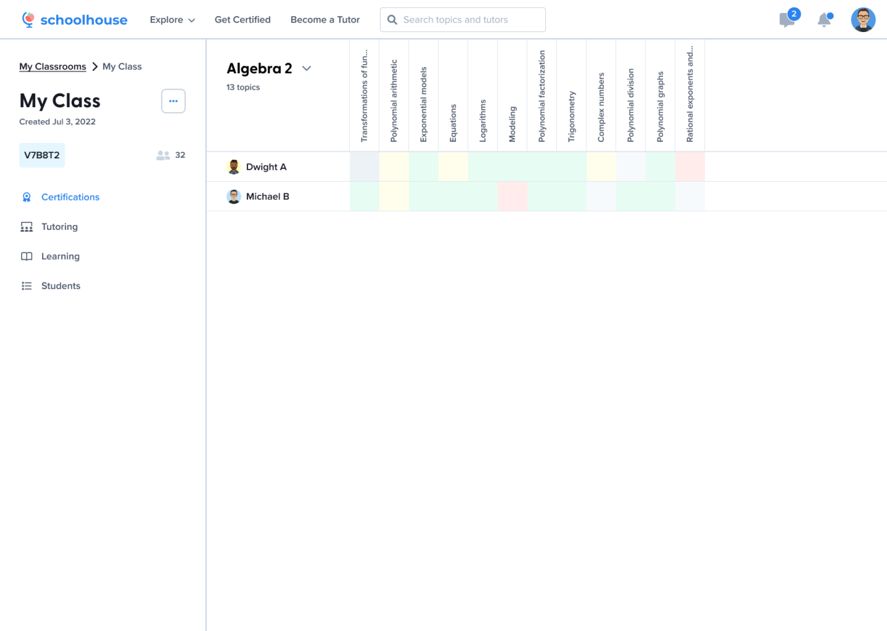
No overflow on table content
Table content is easy to scan
Some unit names are truncated
Unit names are difficult to read
Not easy to develop
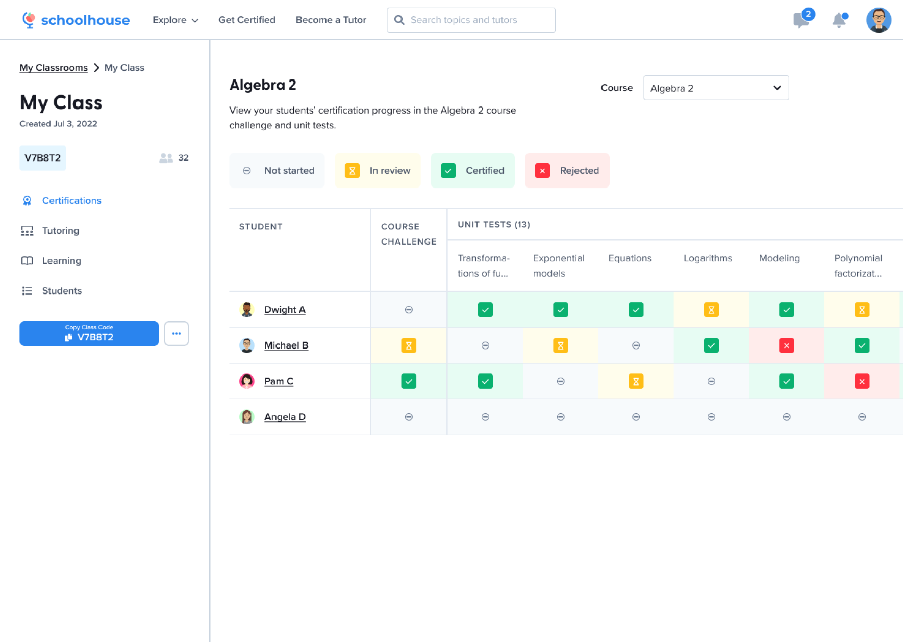
Familiar to teacher gradebooks
Unit names are easy to read
Table content is easy to scan
Some unit names are truncated
Table content overflows and horizontal scrolling is required
Option 3 was used because this table layout was familiar to teacher gradebooks. Therefore, the mental model of the table would match existing models. Although some unit names are truncated, they are easy to read.
New icons were required for this project to symbolically represent each unit test status: not started, in review, certified, and rejected. There were two main considerations: The status iconography and how the icons would be displayed in the status table. Icon colour was already defined in the Schoolhouse design system.
The Schoolhouse design system used font-awesome icons, but several options were curated for consideration.
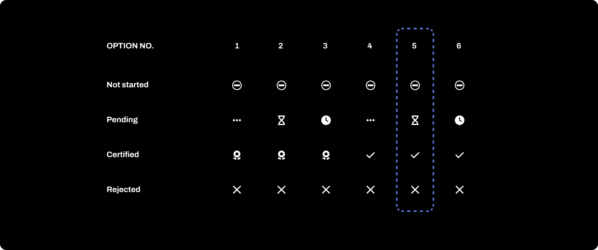
Option 5 was chosen because it was the most visually balanced. The other options contained filled icons with varied stroke width. These options were visually unbalanced because filled icons have higher visual salience.
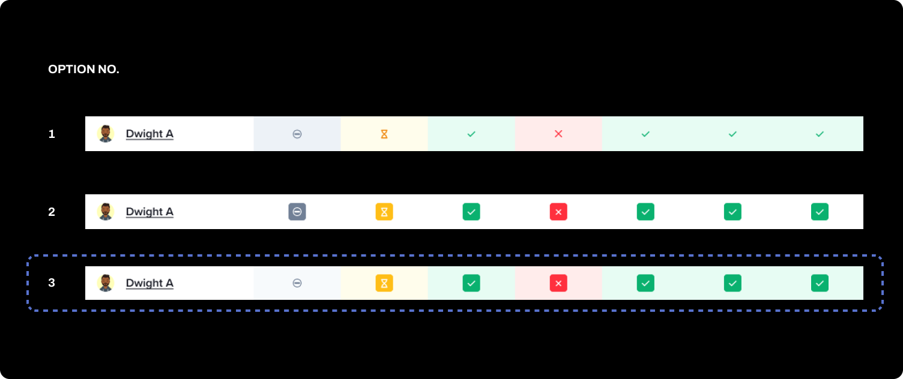
Option 3 was chosen because it provided the most visual contrast. User research insights revealed teachers prioritized high-level understanding of general class progress. They would like to know, at-a-glance, approximately what percentage of their class has progressed. Therefore, visual contrast and colouring the cell background between statuses was important because it would increase scan-ability within the table.
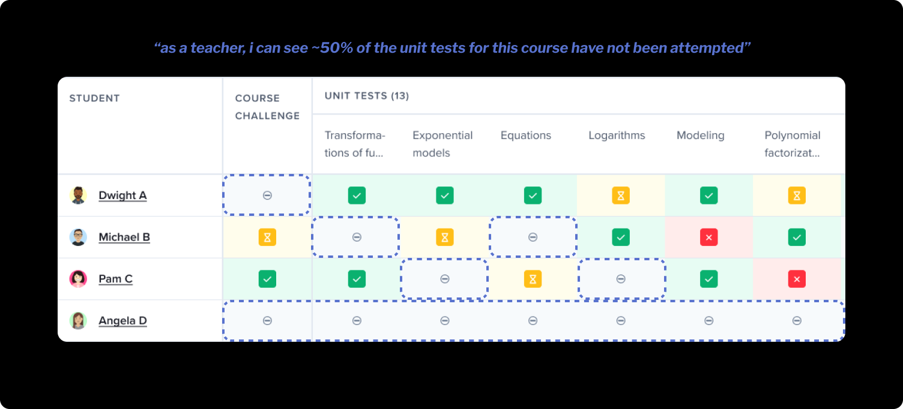
At one point in this project, I didn’t feel comfortable sharing my work with team members because I felt like I hadn’t made any decisions and was still exploring options. Upon sharing however, I received very valuable and directional feedback.
Development work for this project began before designs were finalized, which was overwhelming to begin. I learned to give engineers a heads up if I uncovered a potential design problem that would require additional time. Constant design updates in Slack and the project tracker were also important so there was visibility into my progress and updates.